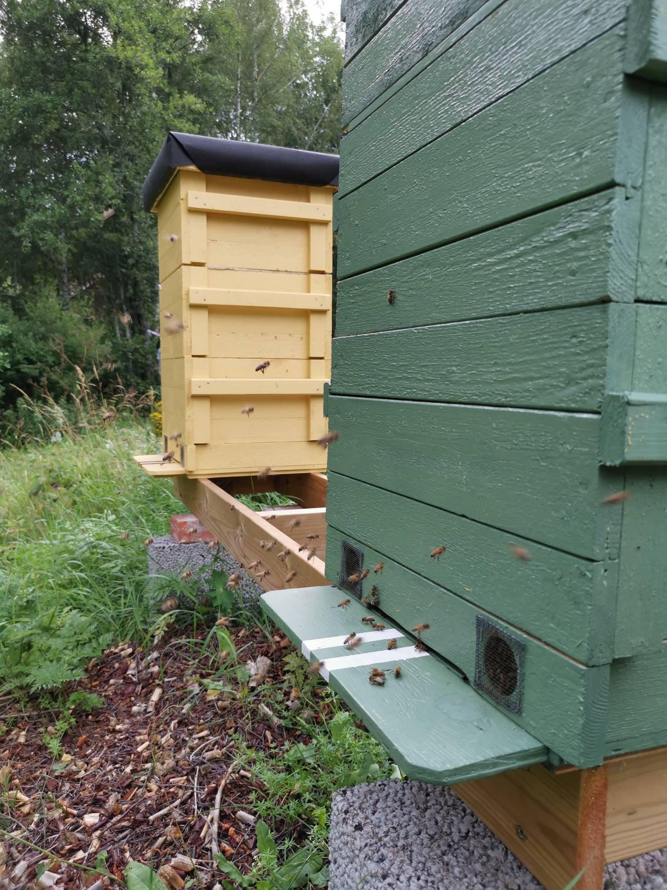

Hyr en bikupa
Ni får en bihörna med spännande bifakta och bidräkter. Ni har också
möjlighet att vara med när vi besöker era bin.
All honung bina har arbetat ihop får ni i burkar med er logotyp på.
Pris: 44 000.-